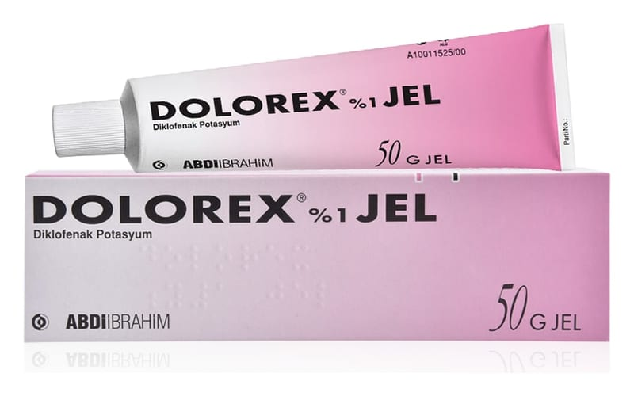

Dolorex %1 Jel, 50 g

Ne için kullanılır
KT · Bölüm 1• DOLOREX etkin madde olarak diklofenak potasyum içeren, jel formunda bir ilaçtır. • DOLOREX topikal kullanılan non-streoidal antiinflamafuvar preparatları olarak adlandırılan bir ilaç grubuna dahildir. Yalnızca harici kullanım içindir. • DOLOREX, 50 g’lık tüpler ile kullanıma sunulmaktadır. • DOLOREX yetişkinlerde o Burkulma, ezilme, incinme gibi kazalar ya da spor yaralanmalarının neden olduğu ağrı, inflamasyon (iltihaplanma) ve şişmede, o Yumuşak doku inflamasyonlarında (iltihaplanmalarında) o Bölgesel romatizma hastalıklarında kullanılır.